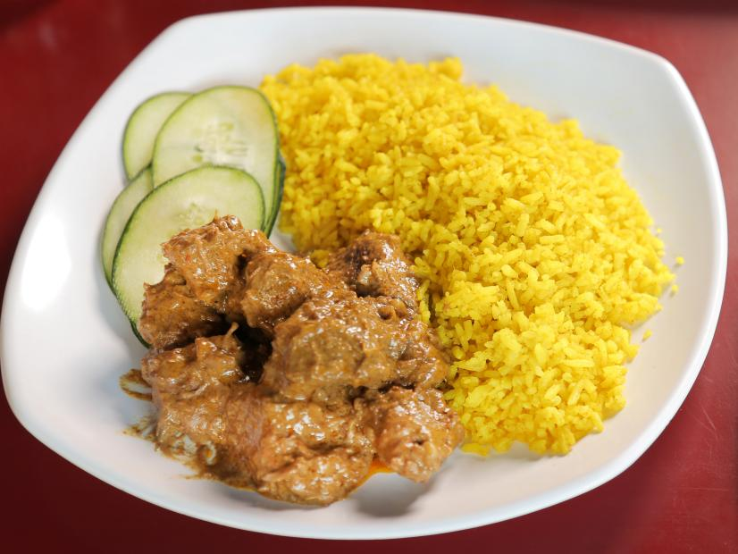

Rendang (Spicy Beef Indonesian Curry)

Source: foodnetwork
Ingredients
- 4 cups coconut milk
- 1 cup water
- 3 tablespoons minced garlic
- 3 tablespoons minced shallot
- 1 1/2 tablespoons minced galangal
- 1 1/2 teaspoons minced fresh turmeric
- 1 teaspoon to 1 1/2 tablespoons minced chile (medium to very spicy)
- 2 teaspoons ground nutmeg
- 1 teaspoon ground toasted cardamom
- 1 teaspoon ground toasted coriander
- 1 teaspoon ground toasted cumin
- 1 teaspoon minced ginger
- 2 or 3 Indonesian bay leaves [1]
- One 2-inch cinnamon stick
- 1 stalk lemongrass, minced
- 2 pounds beef chuck, cut into 2-inch cubes
- 1 tablespoon sugar
- 1 teaspoon kosher salt
Directions
- Put the coconut milk and water in a wok or large pan over medium to high flame and bring to a boil.
- Add the garlic, shallot, galangal, turmeric, chile, nutmeg, cardamom, coriander, cumin, ginger, bay leaves, cinnamon stick and lemongrass and bring to a boil again. Add the beef.
- After about 5 minutes, turn the flame down to a simmer. Add the sugar and salt.
- Cook, stirring every 5 minutes, until the coconut milk turns oily, separates and rises to the top (this is the sign that it's done), about 2 hours.
Cook’s Note
[1] Indonesian bay leaves are known as daun salam. Do NOT use regular bay leaves, they're totally different. It's best to leave out if you cannot find Indonesian bay leaves.
Main page